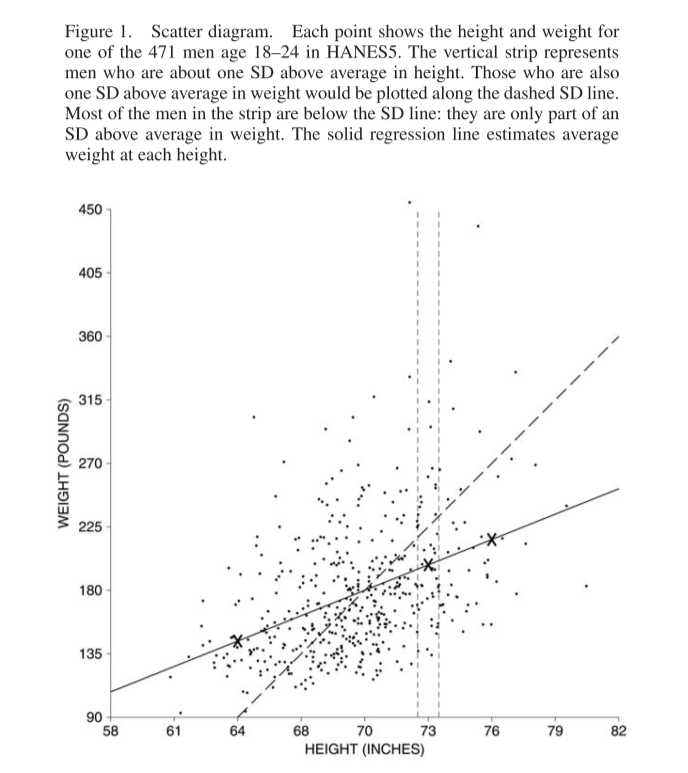
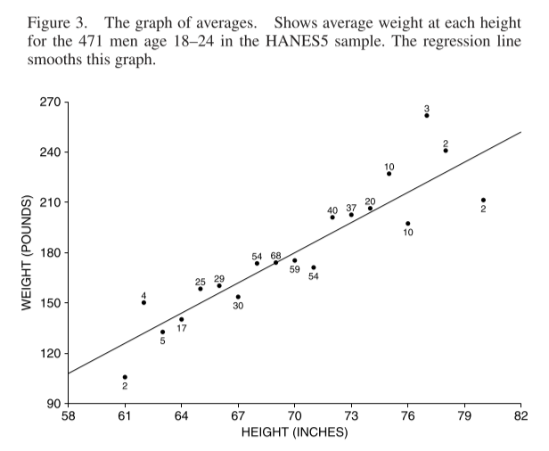
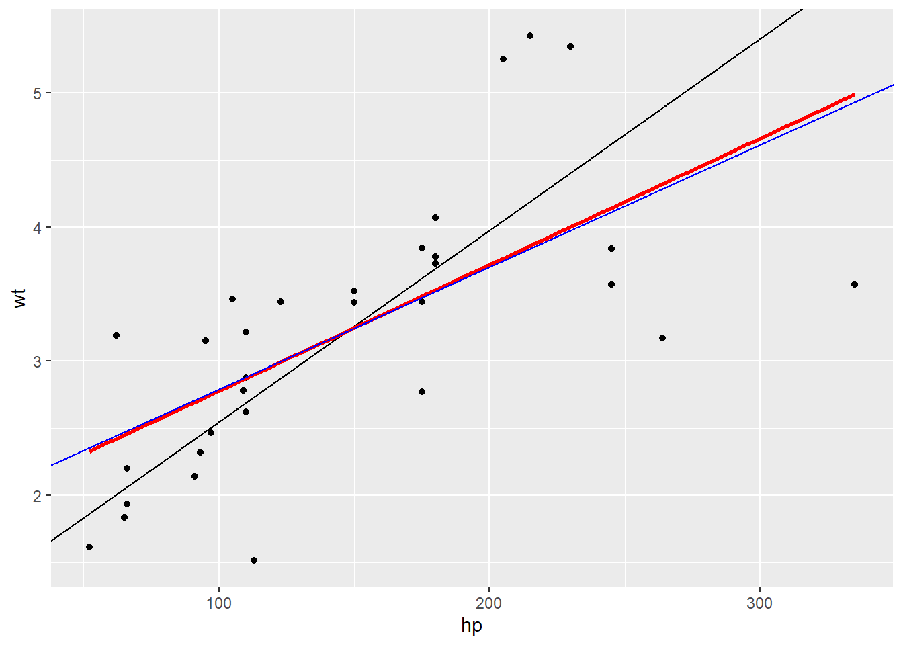
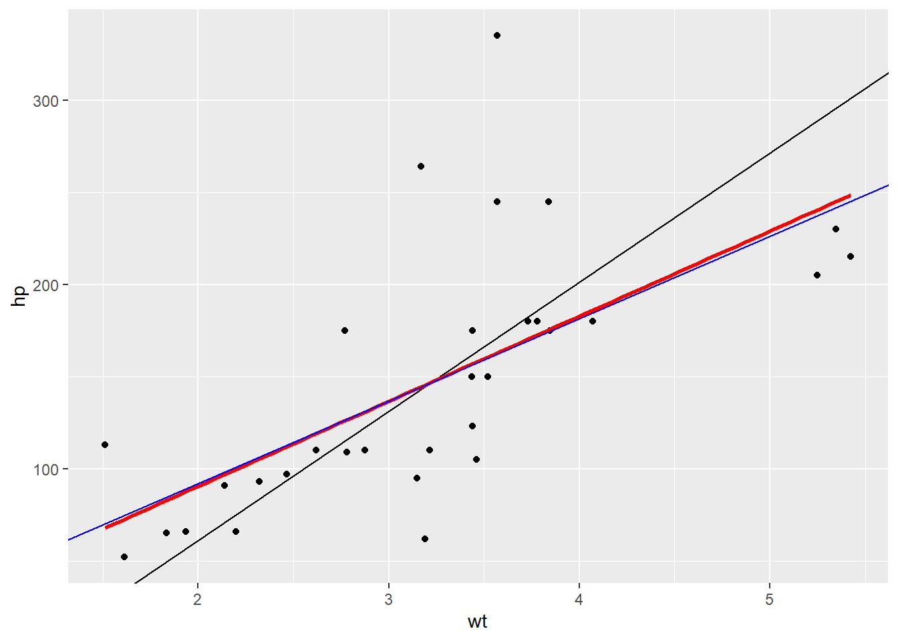
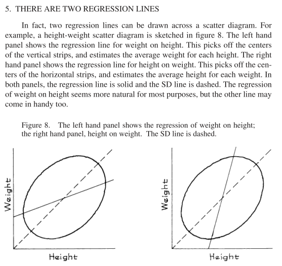
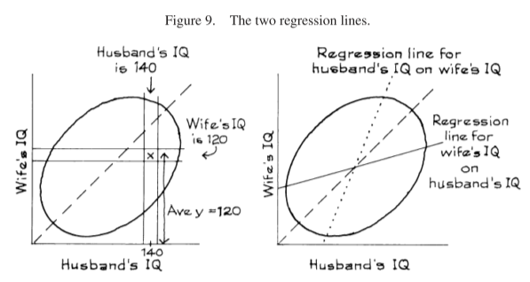

Chapter 10 Regression
10.1 Chapter Notes
Regression gives us a measure of how much one variable changes when we change another. In the plot below we have a collection of heights and weights of 471 men aged 18-24. A dashed line is plotted for the SD line. By looking at the points inside the vertical strip at 73 inches tall, we can see that most men who are one SD about average height are less than one SD above average weight - they lie below the SD line:

The solid line is the regression line - it estimates the average weight corresponding to each height. For every increase of \(SD_x\) in height, the regression line here predicts an average increase of \(r\times SD_y\) in weight, where \(r\) is the correlation coefficient. Here is a plot of the averages at each height, along with the regression line:

The regression line is a smoothed version of this graph of averages. It can perform better or worse at this. If there is a non-linear relationship between the variables, the regression line will not reflect it.
There are some examples in the chapter of predicting a y variable for a subject, given a value for their x variable and information about the regression line.
I’ve been exposed to linear regression from a few different sources now (actuarial exams, Statistical Rethinking etc.) but for some reason I really got stuck this time on the relationship between the correlation coefficient and the regression line. In particular, it was not at all intuitive for me that the slope of the regression line should be \(r \times SD_y / SD_x\) when regressing \(y\) onto \(x\), but also \(r \times SD_x / SD_y\) when regressing \(x\) on to \(y\). It really seemed that when you flip the axes, the slope should be \(1/r \times SD_x / SD_y\). In the height and weight example, it’s easy to believe that when you increase height by one \(SD_{ht}\) you would predict an average weight increase of \(r \times SD_{wt}\). However it is also true that when you increase weight by one \(SD_{wt}\), you predict an average height increase of \(r \times SD_{ht}\). You predict an increase of less than one \(SD\) in your dependant variable for an increase of one \(SD\) in your independent variable, no matter which one you assign to which. And this is not a quirk of the height and weight data in the chapter, but is true of any pair of variables where we would want to calculate Pearson’s correlation coefficient. Confusing!
I think this paragraph from section 12.3 of Gelman, Hill & Vehtari’s “Regression and Other Stories,” helps with the intuition here. They relate it to the phenomenon of ‘regression to the mean’:
This all connects to our earlier discussion of “regression to the mean” in Section 6.5. When x and y are standardized (that is, placed on a common scale, as in Figure 12.2), the regression line always has slope less than 1. Thus, when x is 1 standard deviation above the mean, the predicted value of y is somewhere between 0 and 1 standard deviations above the mean. This phenomenon in linear models — that y is predicted to be closer to the mean (in standard-deviation units) than x — is called regression to the mean and occurs in many vivid contexts. For example, if a woman is 10 inches taller than the average for her sex, and the correlation of mothers’ and adult daughters’ heights is 0.5, then her daughter’s predicted height is 5 inches taller than the average. She is expected to be taller than average, but not so much taller — thus a “regression” (in the nonstatistical sense) to the average.
Also this blog post on Gelman’s site was helpful.
Here are some plots of the mtcars data I made when trying to convince myself this made sense. They show the horsepower and weight of various cars.The black line is the \(SD\) line, the blue line is my hand calculated regression line, and the red line is the regression line from the in-built lm() function in R.
library(tidyverse)
data(mtcars)
# we calculate the averages and standard deviations of our two variables
mean_hp <- mean(mtcars$hp)
sd_hp <- sd(mtcars$hp)
mean_wt <- mean(mtcars$wt)
sd_wt <- sd(mtcars$wt)
# we standardise the two variables and multiply them together to get...
data <- tibble(hp = mtcars$hp, wt=mtcars$wt) %>%
mutate(hp_cent = hp-mean_hp,
hp_stand = hp_cent/sd_hp,
wt_cent = wt-mean_wt,
wt_stand = wt_cent/sd_wt,
prod = hp_stand * wt_stand)
# the correlation coefficient
corr <- mean(data$prod)
# we plot the SD line in black and the regression line in blue
ggplot(data=data)+
geom_point(aes(x=hp,y=wt))+
geom_abline(aes(intercept = mean_wt - sd_wt * mean_hp/sd_hp, slope = sd_wt/sd_hp))+
geom_smooth(aes(x=hp, y=wt), method = lm, se=FALSE, colour = "red")+
geom_abline(aes(intercept = mean_wt - corr*sd_wt * mean_hp/sd_hp, slope = corr*sd_wt/sd_hp),colour ="blue")
# now we flip the axes
ggplot(data=data)+
geom_point(aes(x=wt,y=hp))+
geom_abline(aes(intercept = mean_hp - sd_hp * mean_wt/sd_wt, slope = sd_hp/sd_wt))+
geom_smooth(aes(x=wt, y=hp), method = lm, se=FALSE, colour = "red")+
geom_abline(aes(intercept = mean_hp - corr*sd_hp * mean_wt/sd_wt, slope = corr * sd_hp/sd_wt),colour = "blue")
In both plots, the regression line is shallower than the SD line. Useful to imagine slicing the chart into vertical strips and drawing a line through the average of each strip.
Back to the FPP chapter, it also introduces the concept of regression to the mean here, describing test-retest situations and the phenomenon where those who scored low on the initial test will likely see their scores improve and vice versa for those who scored highly.
Thinking that the regression effect must be due to something important, not just the spread around the line, is the regression fallacy.
The FPP chapter also addresses flipping the regression (although it keeps weight and height on the same axes) in a section called ‘There are Two Regression Lines’:

Here’s an example from the chapter that helps clear up some of my confusion from earlier:
Example 3. IQ scores are scaled to have an average of about 100, and an SD of about 15, both for men and for women. The correlation between the IQs of husbands and wives is about 0.50. A large study of families found that the men whose IQ was 140 had wives whose IQ averaged 120. Look at the wives in the study whose IQ was 120. Should the average IQ of their husbands be greater than 120? Answer yes or no, and explain briefly.
Solution. No, the average IQ of their husbands will be around 110. See figure 9. The families where the husband has an IQ of 140 are shown in the vertical strip. The average y-coordinate in this strip is 120. The families where the wife has an IQ of 120 are shown in the horizontal strip. This is a completely different set of families. The average x-coordinate for points in the horizontal strip is about 110. Remember, there are two regression lines. One line is for predicting the wife’s IQ from her husband’s IQ. The other line is for predicting the husband’s IQ from his wife’s.
